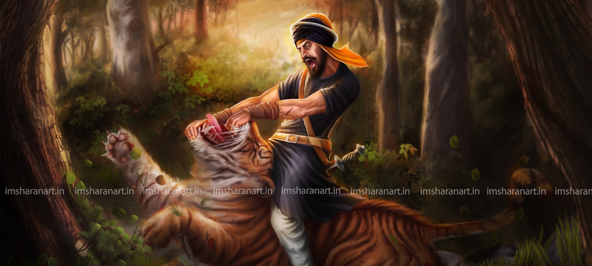

The Sikh Warrior and Legendry Conqueror in the History of World.

The invincibility of the Afghans in their own backyard is indisputable. Whether it was the Soviets in the 1980s, or the Americans post 9/11, the myth of Afghan invincibility on their own terrain still holds its sanctity. Because no matter how strong and well equipped the enemy is, an Afghan doesn't believe in conceding ground.
Except when Hari Singh Nalwa (Nalua), one of the commanders of Maharaja Ranjit Singh's army, brought them to their knees.
Legend has it that Afghan mothers used to quieten their newborns by taking Nalwa's name and for young Afghans, his name was a terror spoken in hush hush. And Probably that's why even American generals used to tell Nalwa's story to motivate their troops when US-Afghan war was in its thick.
Hari Singh Nalwa was born in Gujranwala in 1791 in the Uppal family to Sardar Gurdial Singh and Dharam Kaur. He was the only child, and his ancestors were originally from Majitha town near Amritsar. His grandfather, Sardar Hardas Singh, engaged in the service of Sukarchakia Misl (Ranjit Singh belonged to this Misl), and was killed in an expedition undertaken by the Misl in 1762. His father, Gurdial Singh, followed the profession of his father and took part in various campaigns of Sukarchakia Sardars - Charat Singh and Mahan Singh - in the capacity of Deradar. He expired in 1798 when Hari Singh was only seven years old - and the latter was thus looked after with care and caution by his maternal uncle who took him into his house.
An incident took place in Hari Singh Nalwa's early days of service in the Khalsa army. During a hunting expedition, Hari Singh was attacked by a tiger. The attack was so subtle and unexpected that he didn't have enough time to pull out his sword. Young Hari Singh faced the crucial situation with such boldness that he managed to catch hold of the jaw of the beast with his hands, forcefully pushing it away before killing it with his sword. Noted historian Baron Charles Hugel says he was called Nalwa for 'having cloven the head of a tiger who had already seized him as its pray'.
Hari Singh Nalwa's first significant military campaign was that of Kasur in 1807. Along with his fellow commanders, Hari Singh Nalua marched on to Kasur to subjugate its Afghani owner Kutab-ud-din Khan. Sikhs laid siege for three months after which Kutab-ud-din Khan surrendered. Hari Singh Nalua was the first to march inside the city gate of Kasur with his division Sher-Dil-Rajman.
Battle of Attock (1813) at the fort of Attock was a major replenishment point for all armies crossing the Indus. Sikhs fought and won this battle under the leadership of Dewan Mokham Chand, Maharaja Ranjit Singh's general, against Azim Khan and his brother Dost Mohammad Khan, who fought on behalf of Shah Mahmud of Kabul. Besides Hari Singh Nalwa, Hukam Singh Attariwala, Shyamu Singh, Khalsa Fateh Singh Ahluwalia and Behmam Singh Malliawala actively participated in this battle. This was the first victory of the Sikhs over the Durranis and the Barakzais.
Peshawar, the summer capital of the Kingdom of Kabul became a tributary in 1818 when Shah Mahmud's son, Shah Kamran, killed their Barakzai Vazir Fateh Khan in August 1818. The Sikhs in order to take advantage of this void with their army formally forded the Indus and entered Peshawar for the first time. The Sikh army captured Peshawar and from here on Hari Singh Nalwa was asked to station himself on the Afghan-Punjab border to keep Afghan retaliation in check.
In 1822, the Sindh Sagar Doab was chiefly controlled from Mankera and Mitha Tiwana. Nawab Hafiz Ahmed Khan, a relative of the Durranis, exerted considerable influence in this region. Besides Mankera, he commanded a vast area protected by 12 forts. With the weakening of Afghan rule in Kabul, the governors of Attock, Mankera, Mitha Tiwana and Khushab had declared their independence. Ranjit Singh wanted to take advantage of this opportunity and win Singh Sagar Doad from Hafiz Ahmad Khan. He summoned Hari Singh, who was the governor of Kashmir at this time, to join the Lahore Army already on its way towards the river Indus. The fort of Mankera stood in the middle of the Thal. It was built of mud with a citadel of burnt brick surrounded by a dry ditch. To make the central fortress inaccessible, no wells were permitted by the Nawab to be sunk within a radius of 15 kms. On the night of 26 November, Hari Singh Nalwa, together with other chiefs and jagirdars, established their morchas (batteries) within long gunshot range of the place. They found old wells, which their men cleared out, and fresh ones were dug. On the nights of 6–7 December, they approached closer to the ditch. The ensuing skirmish was ferocious and resulted in considerable loss of life. The siege of the fort of Mankera lasted 25 days. Finally, the Nawab accepted defeat and the last Saddozai stronghold fell to the Sikhs.
In 1836, soon after Dussehra, Hari Singh Nalwa conquered Jamrud, a fort at the mouth of the Khyber Pass. This victory meant that the Sikhs could launch offensive against Kabul anytime. Dost Mohammed Khan of Kabul was alarmed with this victory. But the marriage of Nau Nihal Singh, the Maharaja's grandson in 1837, changed the equation and troops were withdrawn from all over Punjab to put up a show of strength for the British Commander-in-chief who was invited to the wedding.
Dost Mohammed Khan was also invited to the great celebration, but he didn't go. Instead he chose to take this opportunity to seize Jamrud. Hari Singh Nalwa anticipated this and didn't go to Amritsar, stationing himself in Peshawar.
Dost Mohammed ordered his army to march towards Jamrud together with his five sons and his chief advisors, with orders not to engage with the Sikhs. Instead, it was more of a show of strength to try and wrest the forts of Shabqadar, Jamrud and Peshawar. Hari Singh was also told not to engage with the Afghans till reinforcements arrived from Lahore.
Hari Singh's lieutenant, Mahan Singh, was in the fortress of Jamrud with 600 men and limited supplies. Hari Singh, who was in Peshawar, moved to rescue his men who were surrounded from every side by the Afghan forces, without water in the small fortress. Though the Sikhs were totally outnumbered, the sudden arrival of Hari Singh Nalwa put the Afghans in total panic. In the melee, Hari Singh Nalwa was accidentally grievously wounded.
Before he died, he told his lieutenant not to let the news of his death out till the arrival of reinforcements, which is what he did. While the Afghans knew that Hari Singh had been wounded, they waited for over a week doing nothing, till the news of his death was confirmed. By this time, the Lahore troops had arrived and merely witnessed the Afghans fleeing back to Kabul.
Hari Singh Nalwa had not only defended Jamrud and Peshawar, but had prevented the Afghans from ravaging the entire north-west frontier.
You surely would want to know more about his life. There are plenty of resources available on the internet, The British Museum and through out the world.